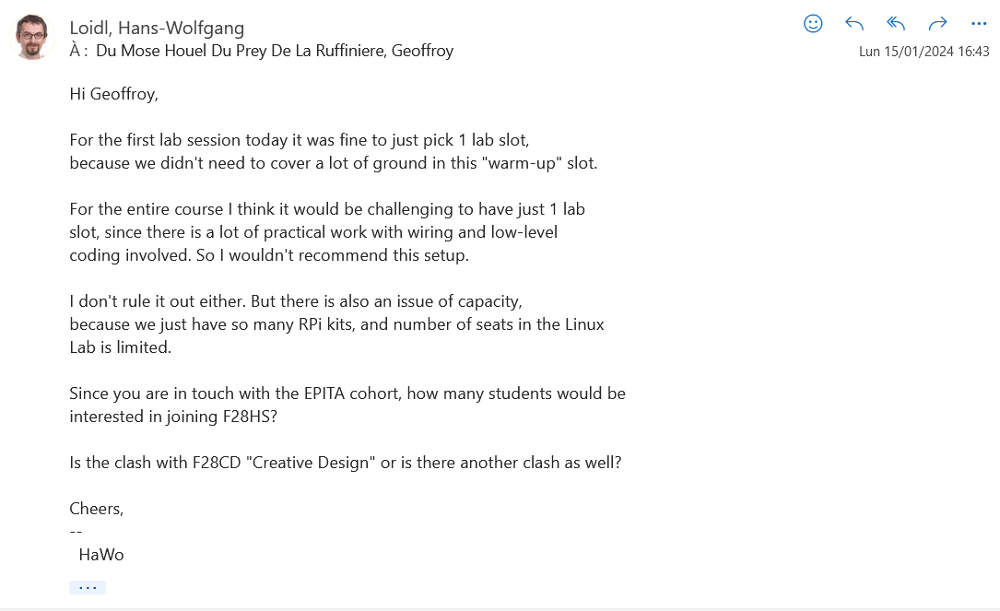
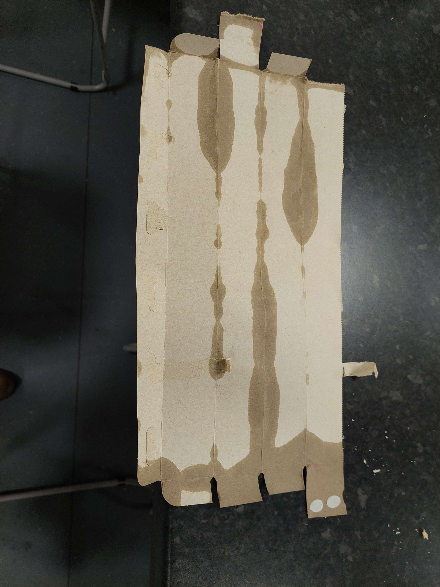
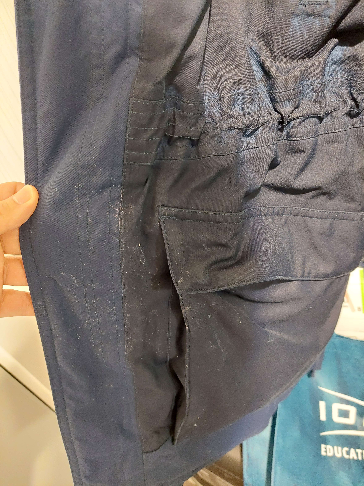
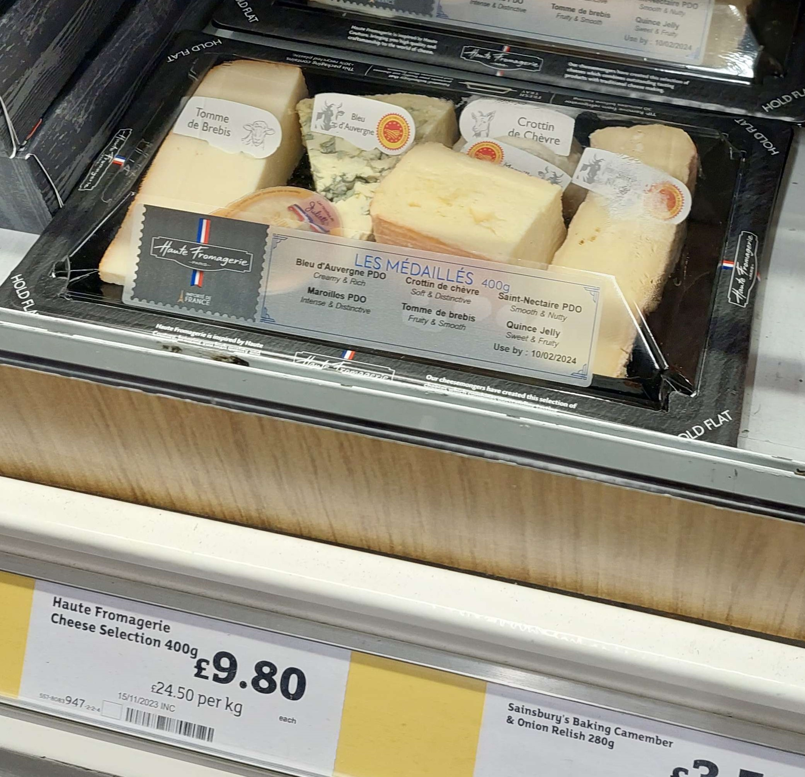
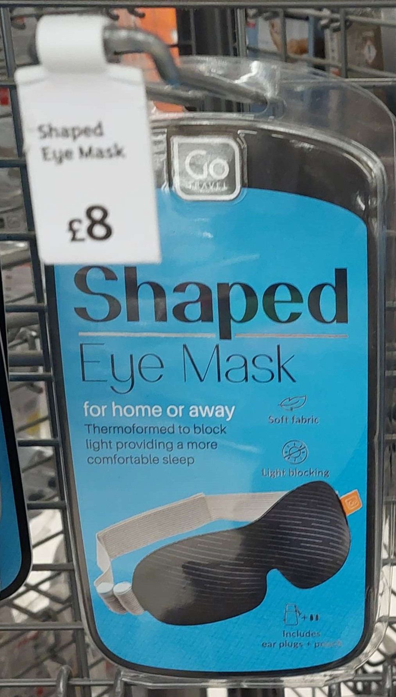

Bonjour vous !
Bon je vous l'accorde ça fait un moment que je n'ai pas écris mais la raison est en fait relativement simple: je n'ai plus autant de choses à dire qu'avant. De ce fait, cette entrée sera la dernière chronologiquement parlant et ensuite je ferai des notes sur des sujets qui me paraissent pertinents.
Les deux premières semaines de cours ont très mal commencées: En effet, le premier lundi pour commencer on arrive devant salle de cours une petite dizaine de minutes en avance à une petite dizaine de français et on y voit un prof. En bons français, on attends que le prof ai terminé avant de rentrer mais le temps passe et il ne sort pas. L'heure arrive et toujours rien. On décide donc de jeter un oeil à l'intérieur voir ce qu'il se passe et on découvre qu'en fait ce prof était le nôtre. Il nous explique donc comment ça marche ici et on comprends quelque chose: en France, les élèves arrivent avant le prof et les cours commencent et finissent en retard par rapport aux horaires normaux; Ici, le prof arrive avant les élèves et les cours commencent et finissent en avance par rapport aux horaires. D'ailleurs, l'heure de fin des cours est théoriquement 15 minutes avant la fin de l'heure (c'est à dire qu'on termine vers 45 en fait).
Bon bref j'ai divagué revenons un peu en arrière: ça a mal commencé. En effet, certains cours notamment Software Development et Hardware Software Interface ont 2 horaires de labo et, dans la mesure ou nous devions en choisir un sur deux pour software development, la rumeur a commencé à circuler qu'il en était de même pour hardware software. J'avais donc fait un petit script (disponible sur le repo de ce blog) dans lequel j'ai mis toutes les combinaisons mathématiques de cours possibles (4 parmi 7, j'ai utilisé des lettres pour représenter les cours) et j'ai mis aussi les incompatibilités des cours pour trouver une dizaine de combinaisons en incluant la règle de cette rumeur. J'ai donc pris l'un de ces packs et ai écris au prof qui m'a alors dit qu'il était peu souhaitable de faire ça (mail joint). Quelques élèves l'ont quand même fait mais pas moi: dès le mardi je suis retourné changer ENCORE de cours pour revenir à ma solution précédente. Au total j'ai donc: pris les cours qui m'intéressaient, changé pour un pack qui fonctionne, changé pour un pack avec hardware software et rechangé vers le pack qui fonctionne. Ce script m'aura quand même permis de trouver un 3ème pack qui fonctionne mais bon trop tard personne ne l'a pris.
Ensuite concernant la difficulté: nous faisons en fait cours avec leur première année si j'ai bien compris donc la difficulté n'est pas si élevée mais il faut quand même s'appliquer en cours parce qu'ils ont des programmes inhabituels pour nous français: là où nos cours pourraient s'apparenter à plusieurs blocs dont on fait une partie de chaque, puis on revient au début pout rajouter une partie et on boucle comme ça, eux font un bloc de A à Z puis passent à un autre de A à Z sans se retourner. De ce fait, je conseille d'être attentif en cours.
A propos des labos: la première semaine en est dépourvue mais à partir de la seconde, les temps de labos dédiés (qui sont en fait des temps de TP) sont suffisants pour terminer les TPs.
Maintenant, laisser moi vous compter quelque évènement notables de cette période:
La tempête: contexte: nous sommes le vendredi 19 janvier 2024, vers Édimbourg. La tempête Isha, fraîchement installée, se déchaîne. Les médias sont unanimes: l'avis de tempête est déclaré (bon j'ai pas vérifié mais quasi sûr que c'était le cas). Dans sa chambre: un petit con qui ne regarde pas les infos se retrouve à cours de courses et décide donc d'aller au Tesco: il prendra au passage des oeufs pour un camarade. Voilà donc euh comment dire... Ca s'est mal passé... Le vent ? Si puissant que j'avais de la difficulté à respirer et même à marcher pendant une poignée de secondes je ne pouvais même tout simplement plus bouger. L'allez était relativement plus simple car j'étais dos au vent mais le retour j'ai dû me mettre de dos par moment. La pluie ? Elle était au rendez-vous elle aussi: j'ai des emballages qui n'ont tout simplement pas survécu au trajet (exemple en photo), mes vêtements ont choppé des grosses traces blanches (photos dispos aussi) et je reste persuadé qu'il y avait carrément un peu de grêle. M'enfin la pluie n'était pas diluvienne non plus mais elle était poussée si fort par le vent que sur de la peau nue l'impact aurait probablement été douloureux. Bon bref à posteriori c'était quand même une expérience intéressante mais bon XD.
La quête du fromage: Après le succès des tortillas, il fut décider de faire la semaine suivante une raclette. Je suis allé chez le fromager rue Morningside: pas de raclette mais ils m'ont conseillé Nisbets pour les appareils. Je suis allé chez celui rue Victoria: très belle rue si on oublie les françaises qui s'engueulaient comme si tout le monde ne parlait qu'anglais mais pareil pas de raclette et pire que ça ils m'ont dit que c'était pas la saison. Je suis allé au Sainsbury's: pareil pas de succès. J'y ai trouvé pas mal de choses hein: de très bons muffins, un "plateau de haute fromagerie française" (photo fournie) mais pas de raclette. C'était le lundi ou mardi de la première semaine de cours ça. Ensuite on me demanda de la tartiflette donc je suis allé de nouveau à Morningside avec Cyril et Léna mais pas de Reblochon. Il nous a bien vendu quelques fromages mais bon... Ensuite je leur ai écrit et j'ai checké leur site et j'ai compris que je n'aurais pas de chance... JUSQU'A CE QUE ! Semaine 2, vendredi: Je vais au Tesco pour mes nécessités et là, tout en haut du rayon fromage je trouves quoi ? DE LA FONDUE ! Bon ok c'est pas de la raclette ni da la tartiflette mais on m'a soufflé l'idée de la fondue aussi quelque part et donc on étais partis ! Dimanche soir on se l'est faite: le goût d'alcool était trop fort mais en vrai on a passé un bon moment. Au passage, quelqu'un a trouvé de la raclette à Tesco dimache (tout en bas) donc on va probablement partir dans une quête de vengeance contre le manque de fromage.
A propos du fromage j'ajouterai deux choses: 1) C'est marrant de voir que tout leur fromage c'est soit du cheddar soit du français (en français) et 2) Le plateau de haute fromagerie française venait avec une confiture de coing et en mettre un peu sur ses tartines de fromage créé une expérience sensationelle: d'abord la douceur de la confiture qui laisse place à la force du fromage le tout dans un environnement contrôlé par le pain je recommande à 100%.
La quête du masque de nuit: Vous vous rappelez la dernière fois quand je parlais de chercher un masque de nuit parce qu'ils connaissent pas les rideaux ici ? Vous vous souvenez du Sainsbury's ? Ouais ba c'est bon j'ai trouvé mon masque de nuit. Très confortable et fourni avec bouchons d'oreille (que j'ose pas utiliser j'ai déjà assez de mal à me réveiller comme ça) et bourse de transport. Pour ceux qui voudraient le chercher c'est au Sainsbury's je vous joint une photo.
PS: La situation étant désormais globalement stable, je n'écrirerai plus de façon chronologique mais j'écrirai par sujet quand j'aurais une idée de sujet pertinent. De plus, je ferai pour la fin de mon voyage un vlog que je mettrais en ligne ici aussi.
Le mail d'harware software:
Photos d'un paquet mort de trajet durant la tempête (je l'ai à pein effleuré):
L'état de mes vêtements à la sortie de la tempête:
Le plateau de haute fromagerie française:
Le masque de nuit:
